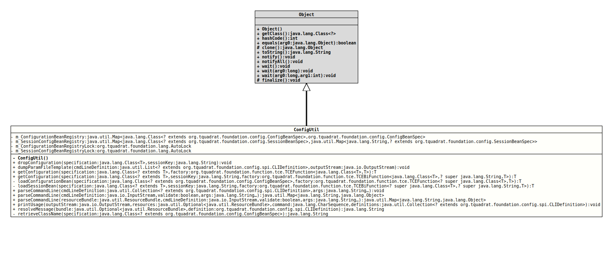

Utility methods that can be used to handle configuration beans.
The main API is defined by the two methods:
They are used to generate and return the configuration bean instance for
the given configuration bean specification. For the same specification, it
returns always the same instance (for an implementation of
SessionBeanSpec,
it will be the same instance when specification and session key are the
same).
The factory argument for
getConfiguration(Class, TCEFunction)
can be a lambda like this:
c -> c.getConstructor().newInstance()
and for
getConfiguration(Class, String, TCEBiFunction),
it could be:
(c,s) -> c.getConstructor( String.class ).newInstance( s )
The factory is required because the code in the module
org.tquadrat.foundation.ui cannot access classes in the
~.generated package of the module that uses the configuration, and
that holds the generated configuration beans.
- Author:
- Thomas Thrien (thomas.thrien@tquadrat.org)
- Version:
- $Id: ConfigUtil.java 942 2021-12-20 02:04:04Z tquadrat $
- Since:
- 0.0.1
- UML Diagram
-

UML Diagram for "org.tquadrat.foundation.config.ConfigUtil"
{kind=link}
-
Field Summary
FieldsModifier and TypeFieldDescriptionprivate static final Map<Class<? extends ConfigBeanSpec>,ConfigBeanSpec> The registry for global configuration beans.private static final AutoLockThe lock for them_ConfigurationBeanRegistry.private static final Map<Class<? extends SessionBeanSpec>,Map<String, ? extends SessionBeanSpec>> The registry for session configuration beans.private static final AutoLockThe lock for them_SessionConfigBeanRegistry. -
Constructor Summary
Constructors -
Method Summary
Modifier and TypeMethodDescriptionstatic final <T extends SessionBeanSpec>
voiddropConfiguration(Class<T> specification, String sessionKey) Drops the configuration bean for the given specification and the given session key.static final voiddumpParamFileTemplate(List<? extends CLIDefinition> cmdLineDefinition, OutputStream outputStream) Dumps a parameter file template for the provided command line definition to the givenOutputStream.static final <T extends SessionBeanSpec>
TgetConfiguration(Class<? extends T> specification, String sessionKey, TCEBiFunction<Class<T>, ? super String, T> factory) Retrieves the configuration bean for the given specification and the given session key.static final <T extends ConfigBeanSpec>
TgetConfiguration(Class<? extends T> specification, TCEFunction<Class<T>, T> factory) Retrieves the configuration bean for the given specification.private static final <T extends ConfigBeanSpec>
TloadConfigurationBean(Class<? extends ConfigBeanSpec> specification, TCEFunction<? super Class<T>, T> factory) Retrieves the configuration bean class and loads it.private static final <T extends ConfigBeanSpec>
TloadSessionBean(Class<? extends T> specification, String sessionKey, TCEBiFunction<? super Class<T>, ? super String, T> factory) Retrieves the configuration bean class for a session bean and loads it.parseCommandLine(InputStream cmdLineDefinition, boolean validate, String... args) Parses the given command line arguments based on the given instance ofInputStreamthat provides the XML CLI definition.static final voidparseCommandLine(Collection<? extends CLIDefinition> cmdLineDefinition, String... args) Parses the given command line arguments based on the provided list ofCLIDefinitioninstances.parseCommandLine(ResourceBundle resourceBundle, InputStream cmdLineDefinition, boolean validate, String... args) Parses the given command line arguments based on the given instance ofInputStreamthat provides the XML CLI definition.static final voidprintUsage(OutputStream outputStream, Optional<ResourceBundle> resources, CharSequence command, Collection<? extends CLIDefinition> definitions) Prints a usage message to the givenOutputStream.static final StringresolveMessage(Optional<ResourceBundle> bundle, String message, String messageKey, Object... args) Deprecated, for removal: This API element is subject to removal in a future version.static final StringresolveMessage(Optional<ResourceBundle> bundle, CmdLineException e) Deprecated, for removal: This API element is subject to removal in a future version.This method is now obsolete.static final StringresolveMessage(Optional<ResourceBundle> bundle, CLIDefinition definition) Returns the message from the givenCLIDefinition.private static final StringretrieveClassName(Class<? extends ConfigBeanSpec> specification) Retrieves the class name for the configuration bean from the given specification.
-
Field Details
-
m_ConfigurationBeanRegistry
private static final Map<Class<? extends ConfigBeanSpec>,ConfigBeanSpec> m_ConfigurationBeanRegistryThe registry for global configuration beans.
The key is the configuration bean specification interface, the value is the initialised instance of the related configuration bean.
-
m_SessionConfigBeanRegistry
private static final Map<Class<? extends SessionBeanSpec>,Map<String, m_SessionConfigBeanRegistry? extends SessionBeanSpec>> The registry for session configuration beans.
The key is the configuration bean specification interface, the value is a map holding the initialised instances of the related configuration beans, indexed by the session identifier.
-
m_ConfigurationBeanRegistryLock
The lock for them_ConfigurationBeanRegistry. -
m_SessionConfigBeanRegistryLock
The lock for them_SessionConfigBeanRegistry.
-
-
Constructor Details
-
ConfigUtil
private ConfigUtil()No instance allowed for this class.
-
-
Method Details
-
dropConfiguration
@API(status=STABLE, since="0.0.1") public static final <T extends SessionBeanSpec> void dropConfiguration(Class<T> specification, String sessionKey) Drops the configuration bean for the given specification and the given session key.
The "session key" can be any arbitrary kind of a unique identifier: a user id, a session id, a URI, or a UUID.
Nothing happens if the there is not configuration bean for the given specification and/or session key.
- Type Parameters:
T- The type of the configuration bean specification.- Parameters:
specification- The specification interface for the configuration bean.sessionKey- The session key.
-
dumpParamFileTemplate
@API(status=STABLE, since="0.0.2") public static final void dumpParamFileTemplate(List<? extends CLIDefinition> cmdLineDefinition, OutputStream outputStream) throws IOException Dumps a parameter file template for the provided command line definition to the givenOutputStream.- Parameters:
cmdLineDefinition- The command line definition.outputStream- The target output stream.- Throws:
IOException- Something went wrong when writing to the output stream.
-
getConfiguration
@API(status=STABLE, since="0.0.1") public static final <T extends ConfigBeanSpec> T getConfiguration(Class<? extends T> specification, TCEFunction<Class<T>, T> factory) Retrieves the configuration bean for the given specification.- Type Parameters:
T- The type of the configuration bean specification.- Parameters:
specification- The specification interface for the configuration bean.factory- The factory that instantiates the configuration bean.- Returns:
- The configuration bean.
-
getConfiguration
@API(status=STABLE, since="0.0.1") public static final <T extends SessionBeanSpec> T getConfiguration(Class<? extends T> specification, String sessionKey, TCEBiFunction<Class<T>, ? super String, T> factory) Retrieves the configuration bean for the given specification and the given session key.
The "session key" can be any arbitrary kind of a unique identifier: a user id, a session id, a URI, or a UUID.
- Type Parameters:
T- The type of the configuration bean specification.- Parameters:
specification- The specification interface for the configuration bean.sessionKey- The session key.factory- The factory that instantiates the configuration bean.- Returns:
- The configuration bean.
-
loadConfigurationBean
private static final <T extends ConfigBeanSpec> T loadConfigurationBean(Class<? extends ConfigBeanSpec> specification, TCEFunction<? super Class<T>, T> factory) Retrieves the configuration bean class and loads it.- Type Parameters:
T- The type of the configuration bean specification.- Parameters:
specification- The specification interface for the configuration bean.factory- The factory that instantiates the configuration bean.- Returns:
- The configuration bean.
-
loadSessionBean
private static final <T extends ConfigBeanSpec> T loadSessionBean(Class<? extends T> specification, String sessionKey, TCEBiFunction<? super Class<T>, ? super String, T> factory) Retrieves the configuration bean class for a session bean and loads it.- Type Parameters:
T- The type of the configuration bean specification.- Parameters:
specification- The specification interface for the configuration bean.sessionKey- The session key.factory- The factory that instantiates the configuration bean.- Returns:
- The configuration bean.
-
parseCommandLine
@API(status=STABLE, since="0.0.1") public static final void parseCommandLine(Collection<? extends CLIDefinition> cmdLineDefinition, String... args) throws CmdLineException Parses the given command line arguments based on the provided list ofCLIDefinitioninstances.- Parameters:
cmdLineDefinition- The definition for the expected/allowed command line options and arguments.args- The command line arguments.- Throws:
CmdLineException- The parsing failed for some reason.
-
parseCommandLine
@API(status=STABLE, since="0.0.1") public static final Map<String,Object> parseCommandLine(InputStream cmdLineDefinition, boolean validate, String... args) throws CmdLineException, XMLStreamException, IOException Parses the given command line arguments based on the given instance ofInputStreamthat provides the XML CLI definition. In case of an invalid entry on the command line, an error message will be printed toSystem.err.- Parameters:
cmdLineDefinition- The definition for the expected/allowed command line options and arguments.validate-trueif the given XML should be validated against the schemaCLIDefinition.xsdprevious to parsing it,falseif the validation can be omitted.args- The command line arguments.- Returns:
- The command line values; the key for the result map is the
value from the
"propertyName"property. - Throws:
CmdLineException- The parsing of the command line failed for some reason.XMLStreamException- The parsing for the XML CLI definition failed for some reason.IOException- Reading the XML CLI definition failed.
-
parseCommandLine
@API(status=STABLE, since="0.0.2") public static final Map<String,Object> parseCommandLine(ResourceBundle resourceBundle, InputStream cmdLineDefinition, boolean validate, String... args) throws CmdLineException, XMLStreamException, IOException Parses the given command line arguments based on the given instance ofInputStreamthat provides the XML CLI definition. In case of an invalid entry on the command line, an error message will be printed toSystem.err.- Parameters:
resourceBundle- TheResourceBundlefor the messages.cmdLineDefinition- The definition for the expected/allowed command line options and arguments.validate-trueif the given XML should be validated against the schemaCLIDefinition.xsdprevious to parsing it,falseif the validation can be omitted.args- The command line arguments.- Returns:
- The command line values; the key for the result map is the
value from the
"propertyName"property. - Throws:
CmdLineException- The parsing of the command line failed for some reason.XMLStreamException- The parsing for the XML CLI definition failed for some reason.IOException- Reading the XML CLI definition failed.
-
printUsage
@API(status=STABLE, since="0.0.1") public static final void printUsage(OutputStream outputStream, Optional<ResourceBundle> resources, CharSequence command, Collection<? extends CLIDefinition> definitions) throws IOException Prints a usage message to the givenOutputStream.- Parameters:
outputStream- The output stream.resources- The resource bundle that is used for translation.command- The command used to start the program.definitions- The CLI definitions.- Throws:
IOException- A problem occurred on writing to the output stream.
-
resolveMessage
@Deprecated(since="0.0.2", forRemoval=true) @API(status=DEPRECATED, since="0.0.1") public static final String resolveMessage(Optional<ResourceBundle> bundle, String message, String messageKey, Object... args) Deprecated, for removal: This API element is subject to removal in a future version.Returns the message for the given key, or the alternative text.- Parameters:
bundle- The resource bundle.message- The message.messageKey- The resource bundle key for the alternative message.args- The argument for the alternative message.- Returns:
- The resolved message.
-
resolveMessage
@Deprecated(since="0.1.0", forRemoval=true) @API(status=DEPRECATED, since="0.0.2") public static final String resolveMessage(Optional<ResourceBundle> bundle, CmdLineException e) Deprecated, for removal: This API element is subject to removal in a future version.This method is now obsolete.Returns the message from the givenCmdLineException- Parameters:
bundle- The resource bundle.e- TheCmdLineException.- Returns:
- The resolved message.
-
resolveMessage
@API(status=STABLE, since="0.0.2") public static final String resolveMessage(Optional<ResourceBundle> bundle, CLIDefinition definition) Returns the message from the givenCLIDefinition.- Parameters:
bundle- The resource bundle.definition- TheCLIDefinition.- Returns:
- The resolved message.
-
retrieveClassName
Retrieves the class name for the configuration bean from the given specification.- Parameters:
specification- The specification.- Returns:
- The class name.
-
I18nUtil.resolveText(Optional, String, String, Object...)instead.